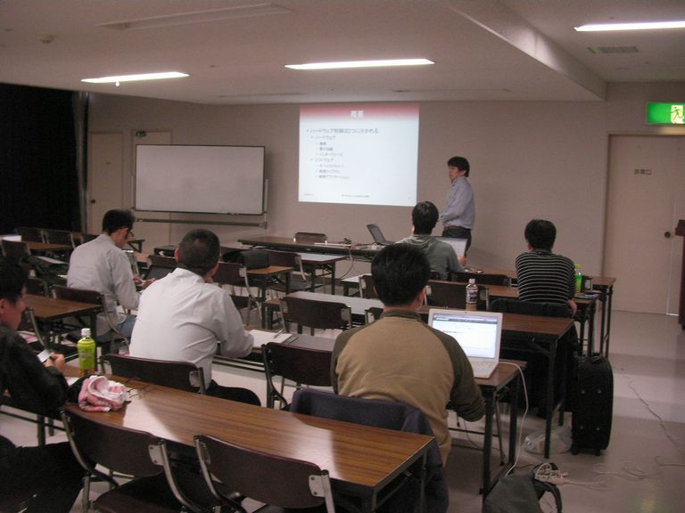

第4回 - オープンラボ岡山
- 修了しました。
?収支報告
参加者 16名（講師5名） [収入] 繰越金 3,023 参加費 7,700（一人700円x11名 講師は除外） 懇親会おつり 2,200（合計47,700 一人3,500x13名） ------------------------- 収入合計：12,923 [支出] 後楽園廉池軒 1,980(1時間 660) 岡山市民会館４階大会議室 8,900（10月は冷暖房代不要） ------------------------- 支出合計：10,880 --------------------------------------- 収入合計ー支出合計：2,043 ※花田さんあずかり 300（おつりが無かったため）
?開催風景
ガウディ本読書会

nariさん。「GC黄金時代」


西本さん。「Ruby de ハードウェア制御」


大垣さん。「RubyでセキュアWebアプリ」

moriqさん。「Rubyでのテスト駆動開発」


英吉さん。「Android Marketにて思うところ」


twingo_bさん。oracle関係の話

?参加申し込み方法
http://utage.org/enkai/menu.cgi?ENKAI_CODE=openlab20091024
?詳細
オープンラボ岡山
オープンラボ岡山とは、岡山周辺の技術者のための勉強会プラットフォームとして、
勉強会や読書会の場を提供するための組織です。勉強会や読書会を開催したい方、
参加したい方が簡単に集まることの出来る場にしたいと考えています。運営委員は
全員ボランティアで、それぞれが勉強会や読書会の主催者でもあります。興味のあ
る方は是非とも一緒にやりましょう。
■名称： 第４回 オープンラボ岡山
■参加申し込み方法
http://utage.org/enkai/menu.cgi?ENKAI_CODE=openlab20091024
■参加費： 1000円以下（参加者数によって変化します。）
■開催日時：
2009年10月24日（土曜日） 9:00～17:00
（午後のみ参加も可能）
■開催場所：
＜午前＞
岡山後楽園 廉池軒（園内）
http://www.okayama-korakuen.jp/
＜午後＞
岡山市民会館 ４階大会議室
http://www.okayama-shiminkaikan.com/
■主催:
オープンラボ岡山 実行委員会
■共催：
岡山Javaユーザ会( http://java.okaya.ma/ )
瀬戸内Linuxユーザ会（ http://www.stlug.org/ )
LinuxKernelHackJAPAN( http://hira-consulting.com/wiki )
オープンセミナー＠岡山実行委員会( http://openseminar.okaya.ma/ )
日本PostgreSQLユーザ会 中国支部( http://www.postgresql.jp/ )
■懇親会：
居酒屋土間土間
http://www.e-map.ne.jp/pc/index.htm?cid=domadoma&kid=0186102
----------------------------------------------------------------------
■■■■■■ 午前 ■■■■■■
岡山後楽園 廉池軒（園内）
http://www.okayama-korakuen.jp/
【タイトル】運営会議
【発表時間】60分
【概要】
運営に関する打ち合わせ
【タイトル】ガウディ本読書会 [岡山読み会|http://reading.okaya.ma]
【発表時間】120分
【概要】
「コンピュータプログラミングの概念・技法・モデル」という本を読みます
■■■■■■ 午後 ■■■■■■
岡山市民会館 ４階大会議室
http://www.okayama-shiminkaikan.com/
【タイトル】自己紹介タイム
【発表時間】20分
【タイトル】GC黄金時代
【発表者名】nari（ネットワーク応用通信研究所）
【発表時間】30分
【概要】
ネットワーク応用通信研究所の紹介
RubyGCの仕組みとGCの歴史などを切々と語ります。
【タイトル】Ruby de ハードウェア制御
【発表者名】西本さん
【発表時間】40分
【タイトル】RubyでセキュアWebアプリ
【発表者名】大垣 靖男
【発表時間】30分
【概要】
RubyでWebアプリを作る際、知っておくべきセキュリティの基礎知識と
気を付けなければならない部分を簡単に紹介します。
【タイトル】Rubyでのテスト駆動開発
【発表者名】moriqさん
【発表時間】20分
【概要】
RailsのActiveRecordモデルに対する開発スタイルを紹介
【タイトル】Android Marketにて思うところ。
【発表者名】英吉さん
【発表時間】15分
【概要】
Android Marketに登録されてるアプリの分析と開発者からみたAndroid
Marketの所感。
【タイトル】（orcle関係）
【発表者名】twingo_bさん
【発表時間】10分
Copyright(C)2009 オープンラボ岡山運営委員会 All rights reserved.